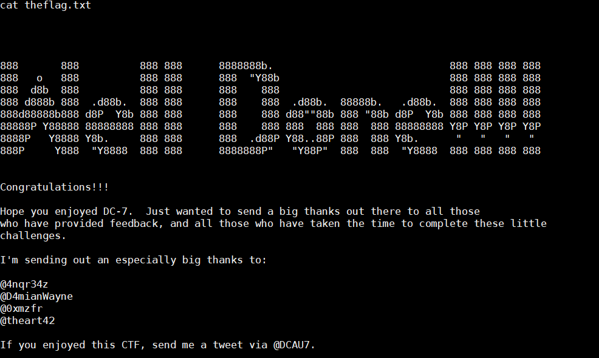

DC-7 靶机渗透
1. 渗透过程
- 主机发现：
1 | arp-scan --interface eth0 192.168.0.1/24 |
找到IP为：
192.168.0.28扫描端口
1 | root@kali:~# nmap -sS -A -p- 192.168.0.28 |
网站上有一段提示
Welcome to DC-7
DC-7 introduces some “new” concepts, but I’ll leave you to figure out what they are. :-)
While this challenge isn’t all that technical, if you need to resort to brute forcing or a dictionary attacks, you probably won’t succeed.
What you will have to do, is to think “outside” the box.
Way “outside” the box. :-)
DC-7引入了一些“新”概念，但我将让您弄清楚它们是什么。:-)
虽然这个挑战并不完全是技术性的，但如果你需要诉诸暴力或字典攻击，你可能不会成功。
你要做的，就是在盒子外思考。
在盒子外面。:-)
在网页的最下面有个 @DC7USER
我这里没办法访问google
看的教程是个Twitter的用户
里面有一个链接：
https://github.com/Dc7User/staffdbstaffdb
This is some “code” (yes, it’s not the greatest code, but that wasn’t the point) for the DC-7 challenge.
This isn’t a flag, btw, but if you have made it here, well done anyway. :-)
这是一些DC-7挑战的“代码”（是的，这不是最棒的代码，但那不是重点）。
这不是旗子，顺便说一下，但如果你在这里做得好，无论如何。:-)
在这个项目里面有个config.php的文件
里面有账号和密码
1 |
|
数据库的密码？？
然而没有数据库的入口啊
试试网站的后台
发现没用，再试试ssh
1 | ssh dc7user@192.168.0.28 |
- 进了~
1 | # 只有两个东西 |
备份网站和数据库的邮件？
先去
/var/mail看看邮件是什么、
1 | From root@dc-7 Tue Apr 28 23:15:34 2020 |
这是计划任务的邮件
好像是会执行
/opt/scripts/backups.sh文件看看这个文件
1 | dc7user@dc-7:/opt/scripts$ ls -l |
只有root和www-data可以写入
现在只能获得写权限，看看写个木马什么的
想办法进www-data权限
找数据库连接文件
最后在
/var/www/html/sites/default/setting.php中发现数据库账号密码
1 |
|
- 进数据库
1 | mysql -udb7user -pyNv3Po00 |
找了一圈没发现账号密码
~后来才知道
/opt/scripts/backups.sh文件里面有个drush命令，可以用来修改密码drush命令使用：http://drupalchina.cn/node/3019
1 | dc7user@dc-7:~$ cd /var/www/html;drush user-password admin --password="1234" |
然后我们登陆网站的后台
竟然没有写马的地方···

后面得知可以安装一个模块
然后改用成可以使用写php文件的
记得勾选PHPfilter
下面的format改成phpcode就可以写木马了
nc 监听
就能反弹了
然后利用
www-data把/opt/scripts/backups.sh添加一句

1 |
|
再开一个nc监听。过一会就得到root权限了
